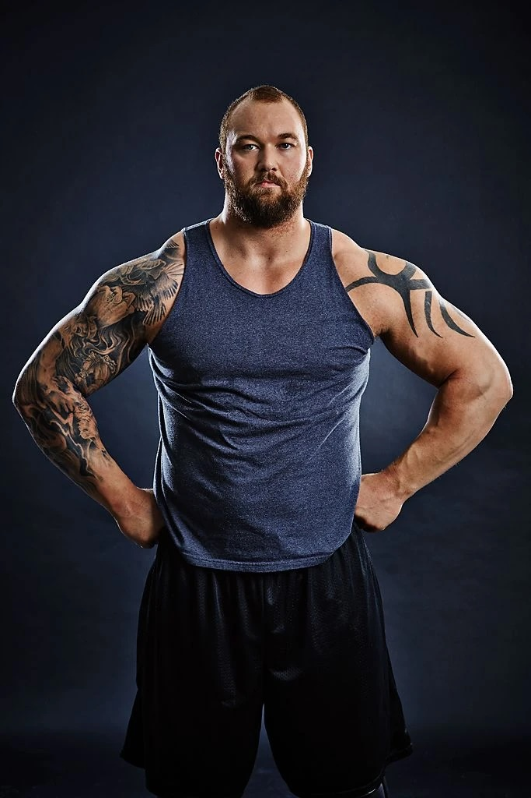

About Hafthor Julius Bjornsson

Hafþór Júlíus Björnsson is an Icelandic strongman and actor, known for his achievements in major strongman competitions. He was born on November 26, 1988, in Reykjavík, Iceland, and before entering strongman he played basketball. One of his most impressive achievements was carrying a 650 kg Viking log for five steps and breaking a record that had stood for centuries. He is also known for deadlifting more than half a ton multiple times. I chose Hafþór Björnsson because I admire the idea of proving people wrong through hard work and determination.
Important Events
- 2011 - began competing seriously in strongman
- 2015 - carried a 650 kg Viking log for 5 steps
- 2018 - won the World's Strongest Man for the first time
- 2020 - lifted 501 kg in deadlift
Key Achievements
- Bjornsson is the first and only man in history to deadlift more than 500 kg three times.
- 61 x 1st places, 17 x 2nd places and 11 x 3rd places = 89 x podium finishes from 106 total competitions
- Three-time Arnold Strongman Classic champion
- Five-time Europe's Strongest Man winner